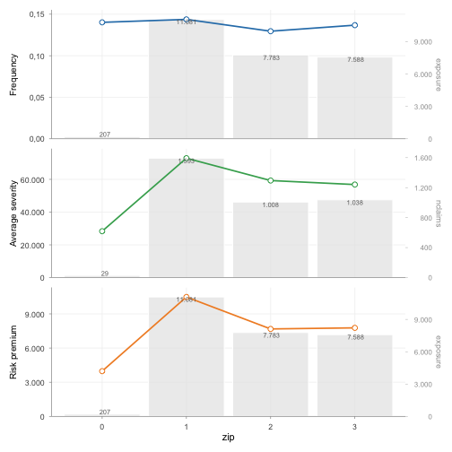

insurancerating provides a structured workflow for analysing, modelling, refining, and validating insurance rating models in R.
The package is designed around common actuarial pricing practice and focuses on the translation of statistical models into interpretable and controllable tariff structures.
Scope
The package supports the following steps in a typical pricing workflow:
- exploratory analysis of risk factors
- estimation of GLM-based pricing models
- controlled refinement of model coefficients
- construction and interpretation of tariff structures
- evaluation of model performance and stability
The focus is on reproducibility, interpretability, and consistency across models.
Installation
Install the CRAN version:
install.packages("insurancerating")Or development version:
# install.packages("remotes")
remotes::install_github("MHaringa/insurancerating")Quick example
library(insurancerating)
# Factor analysis
fa <- factor_analysis(
MTPL,
x = "zip",
nclaims = "nclaims",
exposure = "exposure",
severity = "amount"
)
autoplot(fa, show_plots = 1:3)
# Fit model
mod <- glm(
nclaims ~ zip,
offset = log(exposure),
family = poisson(),
data = MTPL
)
rating_table(mod)## risk_factor level est_mod
## 1 (Intercept) (Intercept) 0.1402024
## 2 zip 0 1.0000000
## 3 zip 1 1.0254064
## 4 zip 2 0.9238016
## 5 zip 3 0.9757522
# Refine coefficients
zip_df <- data.frame(
zip = c("0", "1", "2", "3"),
zip_adj = c(0.90, 0.95, 1.00, 1.10)
)
mod_refined <- prepare_refinement(mod) |>
add_restriction(zip_df) |>
refit()
rating_table(mod_refined)Workflow
A typical workflow consists of:
factor_analysis() # analyse portfolio
glm() # estimate model
prepare_refinement() # apply adjustments
rating_table() # interpret coefficientsCore components
Factor analysis
factor_analysis() provides aggregated portfolio metrics such as:
- frequency
- average severity
- risk premium
- loss ratio
These are used to assess the behaviour and credibility of risk factors.
Rating models
Models are estimated using standard GLMs:
- Poisson for frequency
- Gamma for severity
- Gamma (log-link) for premium
rating_table() expresses model output in terms of original factor levels.
Refinement
Model output can be adjusted using:
prepare_refinement(model) |>
add_smoothing(...) |>
add_restriction(...) |>
add_relativities(...) |>
refit()This step is used to impose structure or incorporate expert judgement.
Model structure
model_data(model)
rating_grid(model)These functions expose the underlying model structure and allow aggregation at model-point level.
Validation
model_performance(model)
bootstrap_performance(model, data)Used to assess predictive accuracy and stability.
Notes
This package is intended to reflect general actuarial pricing methodology. It does not contain proprietary models, data, or business logic.